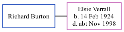

Richard H Burton
[ Home ] | [ Calendar ] | [ Surnames Index ] | [ Family History ]Richard Burton, the husband of Elsie Amy Verrall (the first cousin once-removed on the father's side of Nigel Horne), and married Elsie in Thanet, Kent, England around May 19731.
Citations
- England & Wales Marriages 1837-2005 - Findmypast
Media
England & Wales marriages 1837-2008 - BMD/M/1973/2/AZ/001738/015
England & Wales marriages 1837-2008 - BMD/M/1973/2/AZ/000226/001
Family Tree
Generated by ged2site. Last updated on Nov 13, 2024